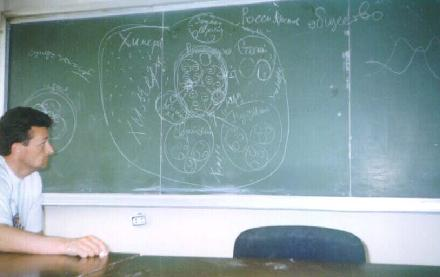
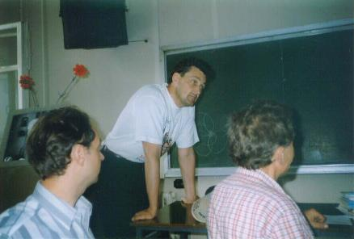

- РУССКОЕ ГЕОГРАФИЧЕСКОЕ ОБЩЕСТВО
Ниже размещены материалы любезно предоставленные Общественной организацией "Фонд Л. Н. Гумилёва".
 |
 |
| Коваленко М.И., проф. Международной Академии Психологических Наук (МАПН), рассказывает о современном состоянии Российского суперэтноса и общества России. | Обсуждение сообщения Коваленко М.И. о современном состоянии Российского общества. |
Третие Гумилёвские чтения, посвященные 20-летию выхода в печать трактата Л.Н.Гумилева "Этногенез и биосфера Земли" (г. Москва, 8-10 июня 1999 г.)
ПРОГРАММА
 8 июня 12.00 -
16.30 (без перерыва)
8 июня 12.00 -
16.30 (без перерыва)
- Председатели: Коваленко М.И., проф. МАПН - ведущий, Шишкин И.С., доцент института Культуры (Москва)
- Доклады: до 20 мин.
- Дискуссия по докладу: до 10 мин.
- 12:00 Гумилева Наталья Викторовна (вдова Л.Н.Гумилева, Москва). Приветственное слово (зачитала Новикова О.Г.)
- 12.15 Балашов Д.М. (русский писатель, друг Л.Н.Гумилева, Новгород). Памяти учителя
- 12.45 Коваленко М.И. (председатель Правления Фонда Л.Н.Гумилева, Санкт-Петербургский университет). Основные направления развития учения Л.Н.Гумилева
- 13.20 Новикова О. Г. (зам. председателя Правления Фонда Л.Н.Гумилева, Государственный Эрмитаж, Санкт-Петербург). Теория этногенеза в восприятии современников
- 14.20 Шишкин И.С. (Московский университет культуры). Учение Л.Н.Гумилева и современная Россия
- 14.50 Айзатулин Т.А. (аналитический Центр Росссийской Академии Наук, Москва). Естественно-научные концепции Л.Н.Гумилева в антропологии и социологии
- 15.15 Мичурин В.А. (Федеральная миграционная служба, Санкт-Петербург). Этнополитические процессы в современном мире в свете теории Л.Н.Гумилева
- 15.40 Малето Е.И. (институт Российской истории
Российской Академии наук, Москва). Влияние идей
Л.Н.Гумилева на развитие отечественной истории
16.00 - 16.30 просмотр телевизионного фильма из цикла "Этносы Земли" с участием Л.Н.Гумилева - "Золотая осень цивилизации"
 9 июня 10.00 -
16.30
9 июня 10.00 -
16.30
- Председатели: Коваленко М.И., проф. МАПН, Шишкин И.С., доцент института Культуры (Москва) - ведущий
- 10.00 Грицай М.В. (председатель общественной организации "Факел", Москва). Вступительное слово
- 10.30 Кара-Мурза С.Г. (Москва) Объект изучения Л.Н.Гумилева - традиционное общество
- 11.00 Вахтин Ю.Б. (Институт цитологии РАН, Санкт-Петербург). Концепция Л.Н.Гумилева и геополитика
- 11.30 Степанов Н.Ю. (Институт истории РАН, Москва). Попытки практической работы евразийцев в Европе, как политической организации в 1920-1930-х годах
- 12.00 Степанов Д.Н. (МГУ). На Евразийском пути: камни и тернии
- 12.30 Малков С.Ю. (Академия военных наук, Москва). Связь динамики численности населения Земли с изменениями климата
13.00 - 14.00 Перерыв
- 14.00 Савельев В.В. (Академия Госслужбы, Москва). Теория этногенеза и этнополитическая практика
- 14.30 Мельченко В.Е. (РАН, Москва). Об индивидуальности ландшафта
- 15.00 Поляков В.А. (Государственный Эрмитаж, Санкт-Петербург). Казачий обык (уклад жизни) - способ сохранения пассионарности
- 15.30 Чистов В.Г. (ОНЕКСИМ банк, Москва). Этнополитические процессы в современном Вьетнаме с позиций теории этногенеза
16.00 - 16.30 просмотр телевизионного фильма из цикла "Этносы Земли" - "От Руси до России"
 10 июня 10.00 -
16.30
10 июня 10.00 -
16.30
- Председатель и ведущий Шишкин И.С., доцент института Культуры (Москва)
- 10.00 Голованов Л.В. Космический детерминизм: естественнонаучные и философские аспекты
- 10.20 Тимашев С.Ф. (Государственный научный центр РФ НИФХИ им. Л.Я. Карпова РАН, Москва). Российский космизм - утверждение научных основ
- 10.40 Родионов А.Ю. (координатор Вэб-сайта Gumilevica, Алма-Ата, Казахстан). О создании сайта и работе в информационном пространстве Интернета
- 11.00 Перов М.В., Иванов К.И. (МГУ). Живое вещество и энергия электромагнитного поля
- 11.30 Ефанов Л.Е. (Москва). На крутом изломе - 50 на 50 или нынешнее состояние российского этногенеза
- 12.00 Буров А.С. (Троицкая Слобода). Гипотеза "триединого процесса развития" К.Н.Леонтьева
- 12.30 Чистов В.Г., (ОНЕКСИМ банк, Москва). Современные этнические процессы в Центральной и Южной Африке
13.30 - 14.00 Перерыв
- 14.30-18.30 Дискуссия по докладам - ведущая Новикова О.Г.
На вопросы о современном состоянии Российского суперэтноса отвечают Коваленко М.И. и Чистов В.Г.
18.30 - Закрытие конференции - Заключительное слово Коваленко М.И.
Эта страница была последний раз обновлена 01/22/03.